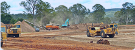
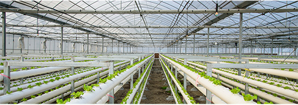

四川森霖农业发展有限公司总部位于成都高新区环球中心，公司占地面积上千平方，并于绵阳市、仁寿县分别设立全资子公司。
关于森霖
森霖大事迹
企业愿景
通知和招聘
森霖农业联合农业产业链各领域优秀企业，通过产业整合，以专业种植、养殖技术人员和专业的管理团队，引进先进的理念和科学的管理模式， 来实现产业整合——规模化发展现代农业建设。完成森霖农业产业项目的专业化运营、行业精英整合，让中国农业从传统的“刀耕火种”真正跨越到 ——集约化、机械化、智能化。
现代农业产业大礼发展升级，实现规模化农业产业平台运营，打造中国领先农业现代科技产业园是全“森霖人”的目标。
2018年1月
森霖农业总公司在蓉成立
2018年3月
森霖农业现代产业园项目落地仁寿
2018年4月
森霖农业眉山子公司设立
2018年6月
森霖农业设立绵阳子设立
2018年6月
森霖农业黄甸现代农业综合产业园开工
森霖农业核心价值观

使命
构筑农业生态，建立持续发展
核心
诚信合作共赢，实践务实成果

宗旨
赋能农业农民，回报股东社会
经营
诚信实干双赢，持续科技创新

一、成都总公司营销总监招聘
【2018-01-11】
招聘职位:营销总监
学历要求:大专
工作经验:5-10年
薪资（k/月）：30-50
岗位职责：
1. 策划、制定公司的整体运营目标及计划，制定相应的运营策略，监督执行及落实情况。
2. 研究及探索农业经济发展趋势，解读国家政策，对公司的各类项目进行规划及运营。
3. 参与政府、银行、企业等各方资源的对接和维护工作，推动企业对外关系的良性运转。
4. 参与公司团队组建工作，建立各类绩效考核、培训、激励机制，提升团队的专业能力及战斗力。
5. 统筹管理公司运营团队，组织团队落实公司经营指标
。
任职资格：
1. 性别不限，30-45岁，大专及其以上学历，农业林学等相关专业毕业，并取得驾驶证，熟练驾驶。
2. 从事地产项目开发、现代农业产业园、土地流转等市场运营管理的整体推广及策划工作8年以上，其中有3-5年左右的运营管理经验，有农业行业或保险行业运营管理经验的优先考虑。
3. 能吃苦耐劳，且善于沟通、谈判及公关，规划及管理经验丰富，团队意识及责任心强，拥有全局性思维。
二、成都总公司运营总监招聘
【2018-06-05】
招聘职位:运营总监
学历要求:本科
工作经验:5-10年
薪资（k/月）：30-50
岗位职责：
职责描述：
1、对农业种植、农业经济有深入研究，熟悉本产业链的各个环节；农业项目的整体把控，运营策划方案的撰写；
2、具有很强的团队协作精神、组织及策划能力和良好的沟通技巧；
3、能与政府、企业高层人士广泛接触，并深入沟通；
4、较强的逻辑思维能力；进行市场分析跟踪和策略调整；
5、园区的整体规划工作，制定运营指标、年度发展计划，完成公司下达的农业产业规划的战略要求和经营要求，合理组织、管理、调配管辖内的下属员工；
6、配合经理做好现场管理和重大接待工作；
7、组织项目成本核算，向财务部提供分析数据，并对其真实性负责。
8、熟悉农业行业的形势及走势，具备良好的市场分析能力。
任职要求：
1、 具备3年以上土地项目运营的经验；
2、大专及以上学历，农业林学等相关专业；
3、从事过地产项目开发、现代农业产业园等市场运营管理的整体推广及策划工作优先；
4、性格开朗、善于沟通，具有较强的抗压能力；
5、优秀的谈判能力和较强的协作精神；
6、年龄要求30~45岁；保险行业五年以上销售管理经验。
三、成都总公司电话销售招聘
【2018-06-19】
招聘职位:电话营销
学历要求:中专
工作经验:不限
薪资（k/月）：4-6
岗位职责：
1、通过线上、线下渠道，进行客户收集，并通过电话进行产品推广和宣传；
2、通过电话挖掘潜在客户群体，搜集客户需求，为客户提供投资及租赁服务；
3、关注、收集最新市场信息，为客户提供持续的支持服务，维护良好的客户关系。
成都总公司销售代表招聘【2018年1月11日】
招聘职位:销售代表
学历要求:中专
工作经验:1-3年
薪资（k/月）：3-6
岗位职责：
1、推广、宣传公司产品，挖掘新客户（种植户、投资商等），分析客户潜在及深度需求能力，促进成单。
2、定期与老客户进行沟通交流，接收老客户的意见和建议，维护良好的客户关系，推动客户的转介绍及二次销售。
3、调研市场情况，收集市场及同业情况，提交相关上级，为销售策略提供决策依据。
4、完成其他上级领导安排的其他工作指令。
公司有广阔的发展空间，提成由你自己决定，只要你敢、你想，没有什么不可能！
职业发展通道：业务代表---销售主管---销售经理---营销总监
四、成都总公司行政人事主管招聘
【2018-06-19】
招聘职位:人事行政主管
学历要求:大专
工作经验:1-3年
薪资（k/月）：5-7
岗位职责：
技能要求：
招聘，HR
职位概述：
1、负责组建农业公司团队，包括运营团队，营销团队等；
2、负责绩效激励方案的制定；
3、全员绩效评估方案制定、跟进，完善相关流程和标准；
4、完善部门招聘流程和招聘体系；
5.参与公司组织架构和岗位设置的制定与调整；
6.拟定公司人力资源发展方案，提升公司管理团队领导力，建立后备人才选拔方案和人才储备机制；
8.把握人力资源方面的信息、数据和趋势，制定相应策略，支持公司业务的可持续性发展。
任职要求：
1.统招大专及以上学历，2年以上人力资源管理工作经验，有农业行业背景且具有组建团队者优先考虑；
2.对现代企业人力资源管理模式有系统的了解和实践经验积累，尤其在人力资源配置、招聘、绩效考核方面具有丰富的实践经验；
3.具备人力资源战略规划、组织变革管理、管理能力开发等管理体系建设能力；
4.具备优秀的人际交往能力、应变能力、沟通及解决问题的能力；
五、成都总公司财务总监招聘
【2018-06-19】
招聘职位:财务总监
学历要求:本科
工作经验:5-10年
薪资（k/月）：30-50
岗位职责：
1、建立健全公司财务制度、内审体系、财务组织架构，制定公司财务目标；
2、熟悉国家各项相关财务、税务、审计等法规政策；
3、对财务报表、投资项目做财务分析，将经营问题及时提供给上级领导做决策参考；
4、确保财务体系高效运转，资金正常运作；制定公司资金运营计划，监督资金管理报告和预、决算；
5、协调本部门与公司内外部沟通、联系、维护公司利益。
6、参与公司重要事项的分析和决策，为企业的生产经营、业务发展等提供财务分析和决策依据；
7、审核财务报表，提交财务管理工作报告；及总经理交办的其他工作。
任职要求：
1、7年以上财务经验，3年以上大型集团公司财务经验，2年以上财务管理经验；
2、大学本科以上，财经、金融类相关专业、并取得注册会计证书；具备投资融资经验者、高级会计师职称优先；
3、较强的逻辑思维以及判断和决策能力、人际沟通和协调能力、计划与执行能力；抗压性强；
4、具有丰富的财务管理、资金筹划、融资及资本运作经验；
5、熟练使用用友财务软件和EXCEL。
六、成都总公司渠道销售招聘
【2018-06-19】
招聘职位:渠道销售
学历要求:中专
工作经验:1-3年
薪资（k/月）：4-6
岗位职责：
1、发展重点客户，保证渠道客户销量持续增长；
2、建立和维护客户档案；
3、制定销售计划，进行销售预测；
4、进行重要客户关系及订单的处理和跟进；
5、开发新客户，拓展与老客户的业务；实现销售。
6、协调公司内部资源，提高客户满意度；
7、重点开发政府等特通渠道。
任职要求：
1、中专以上学历，有较强的交际能力。熟悉产品功能特性；
2、熟悉快消品销售行业及销售相关流程，至少1年以上销售或客户服务的工作经验；
3、出色的销售意识及较强的谈判能力，以及良好的团队合作精神；
4、较强的计划及组织协调能力；
5、学习能力强，适应快速发展的工作环境。
要求
任职资格：
1、具有丰富的渠道商代理商开拓能力，性格外向，良好的职业操守
2、具备较强的客户沟通谈判能力和较高的分析处理能力，具有良好的团队协作精神
3、工作1年以上
4、有政府、事业单位等相关渠道；
福利：
4-5K 底薪加提成
七、成都总公司市场运营招聘
【2018-06-19】
招聘职位:市场运营
学历要求:大专
工作经验:1-3年
薪资（k/月）：4-8
岗位职责：
1、根据公司战略规划及业务模式，拟定线上线下运营推广的发展规划；
2、落实与线上线下客户的对接，土地供应商服务；
3、对执行业务流程中的相关问题予以解决并对其加以完善、改进；
4、根据公司的需求实现线上的对外拓展、营销，深度挖掘客户资源，并实现运营指标的达成
任职要求：
1、专科以上学历
2、2年以上相关工作经验
3、具有较强的沟通协调能力，资源管理和拓展能力
4、有较强的计划性和实施执行能力
八、成都总公司产业园项目设计师招聘
【2018-06-19】
招聘职位:产业园项目设计师
学历要求:大专
工作经验:1-3年
薪资（k/月）：6-10
岗位职责：
1、 开展项目现场调研、方案制作、方案深化、模拟计算、设计概算、现场技术落地指导、现场调试等；
2、 熟练掌握 CAD、PHOTOSHOP、3DMAX等绘图设计软件；
3、 能独立完成园林设计工作及制图，熟悉园林设计施工苗木花卉；
4、 负责完成公司工程项目的设计工作，并能进行现场布置；
5、 搜集整理本专业技术资料，建立本专业设计资料信息库配合完成标准化建设工作；
6、 负责项目规划方案、建筑方案、精装修方案的评审；
7、 负责设计变更、竣工验收等阶段的设计管理工作；
8、 参与项目成本控制，根据项目开发需求，完成相应的技术报告。
任职资格：
1、 建筑学、城市规划、设计等相关专业大专及以上学历；
2、 从事建筑设计或园林地产相关工作3年以上工作经验；
3、 有丰富的前期规划设计经验，参与过拿地测算、规划方案；
4、 熟悉规划的编制流程与国家各项标准，主持、参与城市控制性规划、城市修建性规划，编制规划方案各阶段的设计文件及相关进度文件；
5、 具职称或注册建筑师执业资格优先；
6、 有园林设计、项目设计、旅游景区设计、房产小区设计工作经验、有项目设计申报成功经验者优先。
7、底薪六千起。